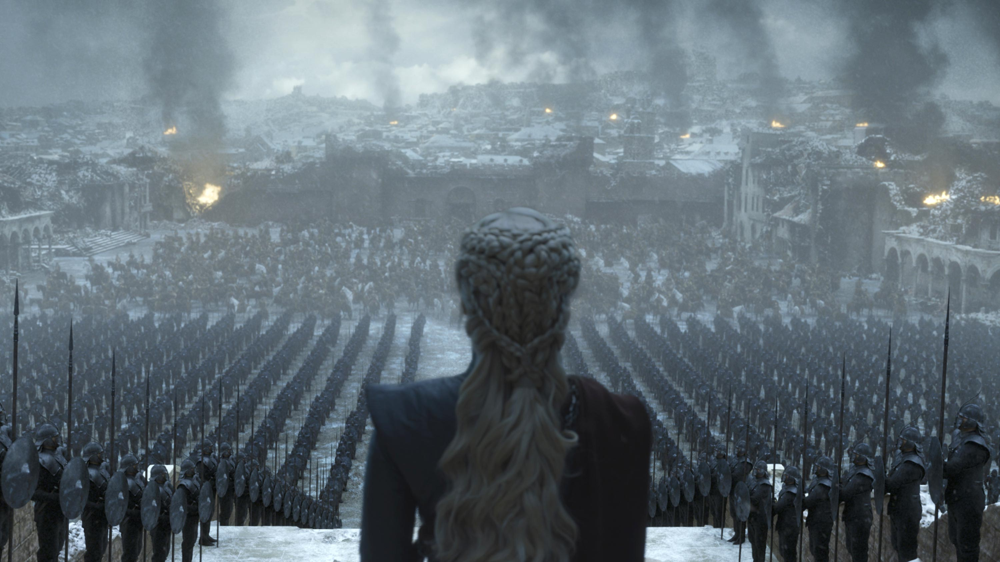

Game of Thrones is an American fantasy drama television series created by David Benioff and D. B. Weiss for HBO. It is an adaptation of A Song of Ice and Fire, George R. R. Martin's series of fantasy novels, the first of which is A Game of Thrones. The show was both produced and filmed in Belfast and elsewhere in the United Kingdom. Filming locations also included Canada, Croatia, Iceland, Malta, Morocco, and Spain. The series premiered on HBO in the United States on April 17, 2011, and concluded on May 19, 2019, with 73 episodes broadcast over eight seasons.
Set on the fictional continents of Westeros and Essos, Game of Thrones has a large ensemble cast and follows several story arcs. One arc is about the Iron Throne of the Seven Kingdoms of Westeros and follows a web of alliances and conflicts among the noble dynasties either vying to claim the throne or fighting for independence from it. Another focuses on the last descendant of the realm's deposed ruling dynasty, who has been exiled to Essos and is plotting a return to the throne, while another story arc follows the Night's Watch, a brotherhood defending the realm against the fierce peoples and legendary creatures of the North.
Game of Thrones attracted a record viewership on HBO and has a broad, active, and international fan base. The series was acclaimed by critics for its acting, complex characters, story, scope, and production values, although its frequent use of nudity and violence (including sexual violence) was criticized; the final season received further criticism for its condensed story and creative decisions, with many considering it a disappointing conclusion. The series received 58 Primetime Emmy Awards, the most by a drama series, including Outstanding Drama Series in 2015, 2016, 2018, and 2019. Its other awards and nominations include three Hugo Awards for Best Dramatic Presentation (2012–2014), a 2011 Peabody Award, and five nominations for the Golden Globe Award for Best Television Series – Drama (2012 and 2015–2018). Many critics and publications have named the show as one of the best television series of all time. Source